Dark Souls III
Iudex Gundyr
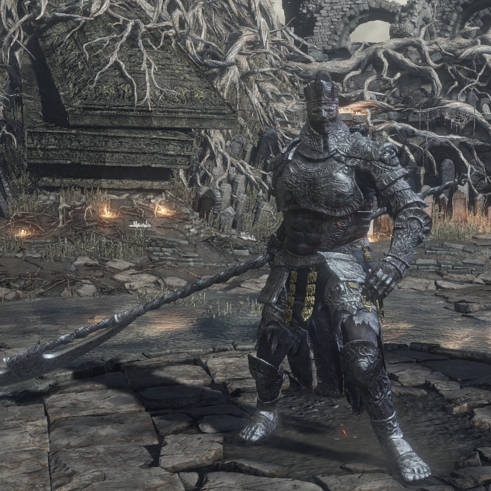
- SCHWÄCHEN
⚡️(BLITZ)🔥(FEUER)❄️(EIS)🩸(BLUTUNG)
-
RESISTENZ
- IMMUNITÄT
-
Kaum habt ihr euer erstes Leuchtfeuer entzündet, schon trefft ihr auf den ersten Boss, der euch den Weg zum Feuerbrand-Schrein versperrt. Bei Iudex Gundyr dürften selbst Anfänger zunächst nicht allzu große Schwierigkeiten haben. Habt ihr ihm jedoch die
Hälfte seiner Lebensenergie abgezogen mutiert er und es beginnt Phase 2. Hier hat Gundyr eine erheblich höhere Reichweite und teilt mehr Schaden aus.
Vordt vom Nordwindtal
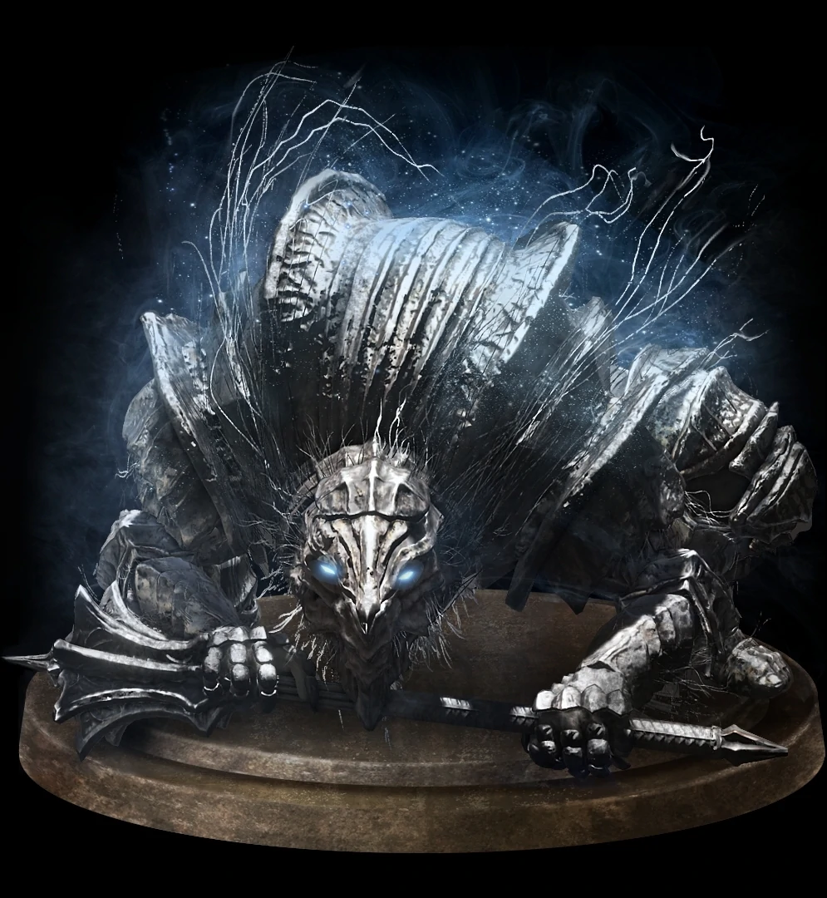
- SCHWÄCHEN
- RESISTENZ
- IMMUNITÄT
❄️(EIS)☠️(GIFT)🩸(BLUTUNG)
-
Dieser Boss versperrt euch den Zugang zur Untoten-Siedlung. Um zu ihm zu gelangen müsst ihr euch einmal quer durch die Mauer von Lothric kämpfen. Habt ihr dies getan, so öffnet die Abkürzung kurz vor dem Bosskampf. Diese findet ihr dann, wenn ihr vom
Leuchtfeuer aus nach rechts geht, die gewundene Treppe hinuter und euch dann nach links fallen lasst. Hier befindet sich nun der Aufzug, der euch den langen Laufweg erspart.Vordt ist ein auf allen Vieren laufender Wächter in einer
Rüstung, der euch mit seinem großen Streitkolben schnell den Gar ausmachen kann. Um ihn zu besiegen müsst ihr jedoch eine altbewährte Taktik nutzen. Wenn Vordt auf euch zukommt, rollt unter ihn und teilt ein paar Schläge aus. Besonders
anfällig ist er dabei gegen Feuer. In seiner zweiten Phase wird er noch wilder und rast quer durch den Raum. Weicht seinen Rasereien aus und attackiert ihn während seiner Pausen von hinten, dann dürfte auch dieser Kampf nicht der
schwerste werden.
Fluchverderbtes Großholz(Optional)
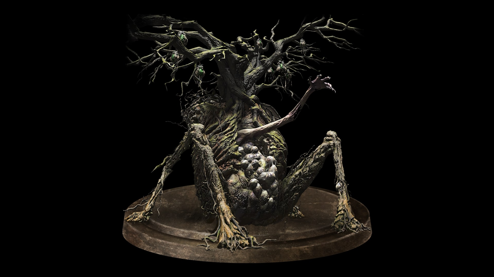
- SCHWÄCHEN
-
RESISTENZ
- IMMUNITÄT
❄️(EIS)🩸(BLUTUNG)☠️(GIFT)
-
Das fluchverderbte Großholz findet ihr am Ende der Untoten-Siedlung. beim Betreten des Areals fällt euch der Boss nicht unbedingt im ersten Moment auf, denn dieser sitzt getarnt als einer von mehreren Bäumen hinten links in der Ecke. Vor ihm sitzen ein
paar Gegner und beten ihn an. Diese köönt ihr jedoch selbst im Kampf ignorieren, da der Boss diese mit seinen Angriffen häufig selbst tötet. Hat der Baum euch bemerkt beginnt der eigentliche Kampf. Relativ früh macht der Baum eine
Arschbombe, die euch den Boden unter den Füßen raubt, doch keine Sorge, das gehört zum Programm. Unten gelandet könnt ihr den Baum nun bezwingen, indem ihr die weißen Eier an dem Boss angreift. Der Baum ist äußerst langsam und
träge, weshalb ihr seinen wenigen Angriffen gut ausweichen könnt. In Phase 2 müsst ihr euch jedoch von der gewachsenen Hand fernhalten, da diese euch beim Greifen enormen Schaden zufügt.
Kristallweiser
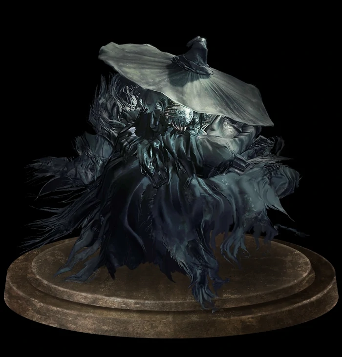
- SCHWÄCHEN
⚡️(BLITZ)🔥(FEUER)⚫️(DUNKEL)☠️(GIFT)
- RESISTENZ
- IMMUNITÄT
-
Marschiert ihr beim Pfad der Opferung durch den großen Sumpf, so entdeckt ihr links eine kleine Treppe, die in eine Ruine führt. Folgt der Route, kämpft euch den Weg durch die Ruine frei und ihr landet beim Bosskampf gegen den Kristallweiser.Dieser beschießt
euch mit verschiedenen Zaubern und teleportiert sich beim Erleiden von Schaden an eine andere Stelle. In der zweiten Phase tauchen zudem Klone vom Kristallweiser auf, die ihr mit einem Schlag wieder vernichten könnt. Ihr könnt
die aber auch einfach ignorieren und den richtigen Kristallweiser attackieren. Diesen könnt ihr an seinen lila Zaubern erkennen. Wenn ihr der Meinung seid, dass ihr zu wenig Schaden austeilt, dann probiert doch mal eure Waffe mit
dem Blitz- oder Gifteffekt zu versehen.
Diakonie des Abgrunds
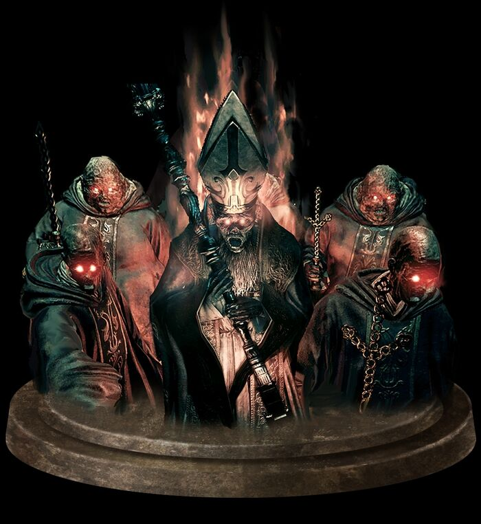
- SCHWÄCHEN
- RESISTENZ
⚫️(DUNKEL)☠️(GIFT)🧙♂️🪄(MAGIE)🩸(BLUTUNG)
- IMMUNITÄT
-
Der erste Hordenboss in Drak Souls 3 erwartet euch in der Kathedrale des Abgrunds. Wenn ihr bei einem der Leuchtfeuer der Kathedrale des Abgrunds startet, dann müsst ihr euch erstmal in die gigantische Haupthalle vorkämpfen. Rechts steht beim ersten Mal
ein Riese, den ihr aber leicht besiegen könnt. Dort wo der Riese stand befindet sich eine Holztreppe. Lauft diese hoch und ihr gelangt an den Altar, vor dem ihr allerdings links abbiegt und zum Bosskampf gelangt. Beim Betreten
des Raums denkt ihr euch zunächst, was die ganzen Gegner sollen. Doch ist der Kampf leichter als er euch erscheint. Einer der vielen Feinde hat einen roten Schleier um sich. Diesen gilt es anzugreifen und beim Tot des Schleier-Trägers
wird der Schleier auf einen neuen Diakon übertragen. In der zweiten Phase erscheint der eigentliche Boss - der Anführer der Diakonie. Bevor ihr diesen angreift solltet ihr die Diakonen in den blauen Roben töten, damit diese den
Boss nicht heilen können. Von hier an müsst ihr nur geduldig sein und das typische "Hit-and-Run-Spielchen" treiben.
Wächter des Abgrunds
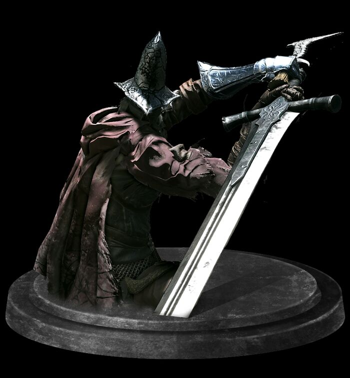
- SCHWÄCHEN
- RESISTENZ
- IMMUNITÄT
-
Hier beginnt der eigentliche Spaß. Habt ihr das Gebiet Farron-Feste durchquert, so stoßt ihr auf eine flache Treppe die zu einem Tor führt. Säubert die Treppe von allen Gegner und schreitet durch die Nebelwand. Ihr trefft nun auf die Wächter des Abgrunds,
die zu einem der 5 Aschefürsten zählen.Ihr werdet mit einer raschen Stoßattacke von einem der Wächter begrüßt. Weicht seinen Schwertstößen aus und versucht ihm richtigen Moment von hinten oder von der Seite ein paar Hiebe mitzugeben.
Nach kurzer Zeit kommt ein weiterer Wächter schreitet ins Geschehen. Versucht beide zu Trennen und dem ersten Wächter etwas Schaden zuzufügen. Auf einmal erscheint ein dritter Wächter, doch anstatt euch zu vermöbeln greift er die
anderen zwei an. Habt ihr es dann geschafft den Energiebalken des Bosses zu leeren, so beginnt Runde 2. Hier gilt es nun besonders gut das Ausweichen zu timen, da der Wächter mit seiner gesteigerten Aggression und dem Feuerschwert
enorm viel Schaden verteilt. Wartet bis er seine Attacke macht, bei der er vorstürmt und den Boden in Brand setzt. Dies ist der perfekte Zeitpunkt für ein paar Treffer. Wiederholt das ganze ein paar Mal und ihr dürftet den Sieg
davontragen.
Hochfürst Wolnir

- SCHWÄCHEN
- RESISTENZ
- IMMUNITÄT
-
Durchquert ihr die Katakomben von Carthus gelangt ihr an eine morsche Hängebrücke. Überquert diese rasch - da sie einstürzt - und ihr kommt in einen großen Raum. Vor euch befindet sich ein Altar mit einem Kelch. Interagiert mit diesem und ihr werdet in
den Bosskampf gegen Hochfürst Wolnir geworfen. Dieser gigantische Fürst ist schwächer als er aussieht. Falls ihr euch wundert, warum ihr ihm kein Schaden macht, dann liegt das wohl an der Tatsache, dass ihr an die falsche Stelle
schlagt. Wolnir trägt nämlich an seinen Handgelenken - oder an dem was davon übrig ist - goldene Armreife. Sind seine Arme am Boden, so schnetzelt auf diese ein und ihr habt ihn im Handumdrehen gelegt. Doch passt im Verlauf des
Kampfes auf, dass ihr ihm nicht zu nahe kommt, da ihr sonst verflucht werdet.
Alter Dämonenkönig (optional)
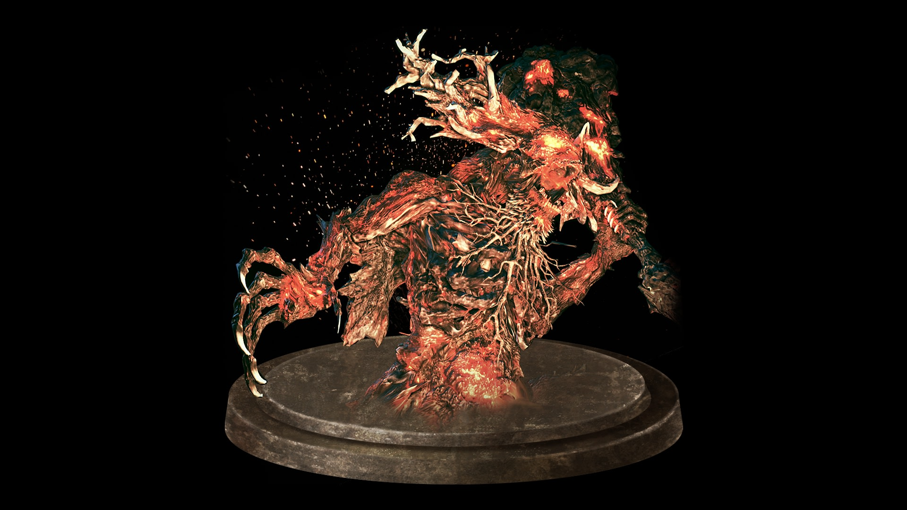
- SCHWÄCHEN
- RESISTENZ
- IMMUNITÄT
-
Dieser Boss ist ziemlich gut versteckt. Habt ihr den Hochfürst Wolnir besiegt müsst ihr zurück zu der eingestürzten Hängebrücke gehen. Klettert an der Brücke herunter und ihr gelangt in ein optionales Gebiet, wo ihr schon mal einer kleinen Version des
Bosses begegnet. Habt ihr diesen beseigt und seid dem Weg gefolgt, so entdeckt ihr das Leuchtfeuer der verwaisten Gruft. Geht ihr nur weiter so gelangt ihr zum Schwelenden See. Hinten links könnt ihr schon das Nebeltor sehen, doch
werdet ihr auf dem Weg dort hin von einer Balliste beschossen und ein riesiger Wurm taucht plötzlich auf. Nehmt also eure Beine in die Hand und bleibt ja nicht stehen. Vor dem Nebeltor auf der linken Seite befindet sich zudem ein
weiteres Leuchtfeuer. Die Angriffe des Dämonenkönigs könnt ihr meist abblocken. Umkriest ihn stets und schenkt ihm von hinten ein paar Treffer ein. Ist euch der Boss zu schwer, dann ist das kein Problem. Da er sowieso optional
ist, könnt ihr in erstmal außer Acht lassen und zu einem späterem Zeitpunkt zurückkehren, um ihm den Gar auszumachen.
Hohepriester Sullyvahn
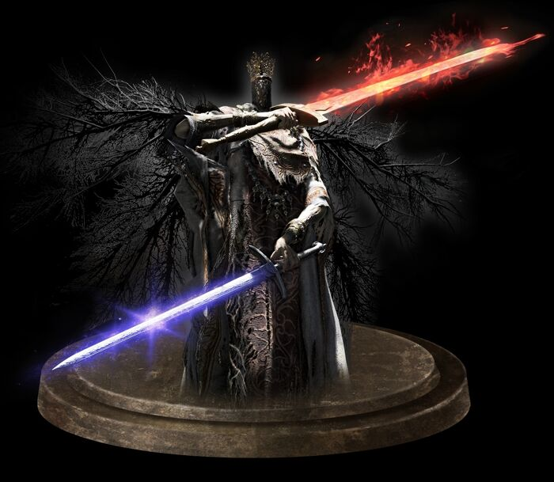
- SCHWÄCHEN
⚡️(BLITZ)🔥(FEUER)⚫️(DUNKEL)
- RESISTENZ
❄️(EIS)🩸(BLUTUNG)☠️(GIFT)
- IMMUNITÄT
-
Einer der schwersten Bosse erwartet euch in in der Kirche von Irithyll. Startet bei der Kirche von Yorshka und öffnet die Abkürzung, wenn ihr aus der Kirche rausgeht und links dem Weg folgt. So ist der Weg zum Boss nicht allzu weit. Betretet ihr den Nebel
seht ihr direkt den Hohepriester Sullyvahn. Zunächst attackiert er euch mit seinem Flammenschwert, welches ihr jedoch blocken könnt. Hinter ihm befindet ihr euch was die meisten Angriffe angeht in einer sicheren Zone, doch sobald
die zweite Phase beginnt, müsst ihr auf Zack sein. Denn jetzt hat Sullyvahn nicht nur sein zweites Schwert gezückt, welches Magieschaden verursacht, sondern auch eine Duplikation von sich heraufbeschworen, welche euch ebenfalls
ans Leder gehen möchte. Doch führt sein Duplikant die Attacken aus, die Sullyvahn einen Moment später ebenfalls ausführt. Ihr könnt euch also präventiv auf die nächsten Momente des Kampfes vorbereiten.
Aldrich der Götterfresser
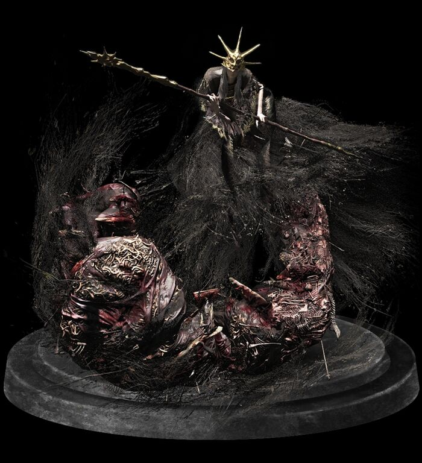
- SCHWÄCHEN
- RESISTENZ
🧙♂️🪄(MAGIE)⚫️(DUNKEL)❄️(EIS)🩸(BLUTUNG)
- IMMUNITÄT
-
Spieler von Dark Souls 1 dürften sowohl Nostalgie als auch Angst verspürt haben, als sie in das Gebiet Anor Londo geschritten sind. Startet ihr beim Leuchtfeuer müsst ihr links in die Festung hinein und die große Empfangshalle einmal von den Gegnern befreien,
damit ihr das Haupttor öffnen könnt. Somit könnt ihr immer von Leuchtfeuer aus einfach geradeaus zum Bosskampf gegen Aldrich den Götterfresser marschieren, der im selben Raum wartet, wie das Boss-Duo Ornstein & Smough aus Teil
1. Aldrich ist ein wahrer Mistkerl, doch mit der richtigen Taktik durchaus machbar. Wen ihr auf Distanz spielt, dann schluckt ihr nur seine nervigen Fernkampfattacken. Ihr solltet also möglichst nah in ihn ran. Da er sich nach
ein paar eingesteckten Treffern von euch immer teleportiert, müsst ihr euch rasch in die Mitte des raumes positionieren und sobald er in einer der Ecken auftaucht schleunigst zu ihm sprinten. Sofern ihr seinem Pfeilregen ausweicht,
dürfte der Rest gelingen. Dann ist der Kampf zwar immer noch kein Kinderspiel, aber zumindest leichter als der Kampf gegen die beiden Raumwärter aus Dark Souls 1.
Yhorm der Riese

- SCHWÄCHEN
🌬(WIND)⚫️(DUNKEL)⚡️(BLITZ)
- RESISTENZ
- IMMUNITÄT
🔥(FEUER)❄️(EIS)🩸(BLUTUNG)☠️(GIFT)
-
Der Kampf gegen Yhorm wirft beider ersten Begegnung mit dem Riesen eine Frage auf: Warum mache ich kaum Schaden? Die Antwort ist simpel. Nachdem ihr von Leuchtfeuer aus die Leiter hinunter geklettert seid und die Steinbrücke mit dem Gargoyle überquert
habt, kommt ihr in der unteren Etage der Ruine zu Yhorm dem Riesen. Doch bevor ihr diesen angreift solltet ihr euch die richtige Waffe besorgen. Diese trägt den Namen Sturmherrscher und ist am Ende des Raums vor Yhorms Thron aufzufinden.
Rüstet diese aus und benutzt die Waffenkunst. Haltet ihr die Taste lang genug gedrückt, so lädt sich die Waffe auf und ihr könnt Yhorm eine kräftige Sturmattacke schicken. Nach vier, maximal fünf dieser Angriffe ist Yhorm auch
schon Geschichte.
Tänzerin des Nordwindtals
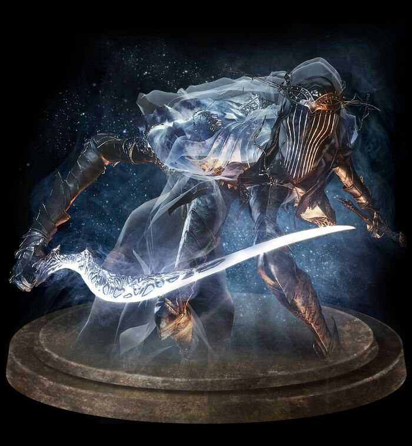
- SCHWÄCHEN
- RESISTENZ
- IMMUNITÄT
-
Ihr gelangt von der Kathedrale am Fuße der Mauer von Lothric in die Burg, doch bevor ihr passieren könnt, müsst ihr die Tänzerin des Nordwindtals bezwingen. Diese findet ihr gegenüber von dem Raum, in dem ihr zuvor gegen Vordt gekämpft habt. Normalerweise
werdet ihr direkt nachdem ihr den dritten Aschefürst erledigt habt in diesen Kampf geportet, doch könnt ihr euch auch schon nach dem Kampf gegen Vordt an diesem Boss die zähne ausbeißen. Dazu müsst ihr lediglich den NPC Maria töten,
die anfangs in der Kathedrale sitzt. Der Kampf gegen die Tänzerin gestaltet sich wesentlich ruhiger als die restlichen Bosskämpfe in Dark Souls 3. Bleibt gaz nah an ihr dran und greift sie in den Pausen ihrer Angriffe an. Achtet
nur darauf, dass sie euch nicht greift, denn sonst war das euer letztes Tänzchen mit ihr. In der zweiten Phase wird sie dabei wesentlich aggressiver und wirbelt sekundenlang mit ihren beiden Schwertern herum. Hier heißt das Schlüsselwort
Geduld. wartet ab bis sie kurz zur Ruhe kommt, teilt ein paar Hits aus und geht wieder auf Distanz. So dürfte auch dieser Boss keine große Schwierigkeit darstellen.
Oceiros der Verzehrte König (optional)

- SCHWÄCHEN
- RESISTENZ
- IMMUNITÄT
-
Sobald ihr die Tänzerin des Nordwindtals besiegt habt könnt ihr die Leiter zur Burg Lothic hinaufsteigen. Nun teilt sich der Weg auf. GGeht ihr geradeaus, so geht ihr tiefer in die Burg hinein. Wenn ihr jedoch die linke Abzweigung nehmt, gelangt ihr in
den Garten des Verzehrten Königs. Durchquert diesen schnurstracks und ihr steht vor dem Bosskampf gegen Oceiros. Oceiros stellt sich nicht als besonders schwieriger Boss heraus. Der Drache schlägt nicht allzu oft zu weshalb ihr
umso mehr austeilen könnt. In der zweiten Phase wird auch er etwas wilder und rast manchmal durch den Raum. Nach eben dieser Aktion oder nach seinem Eisatem benötigt der Drache eine kleine Verschnaufpause. Das ist eure Gelegenheit
ihm von hinten ein paar schmerzhafte Treffer reinzudrücken.
Meister Gundyr (optional)
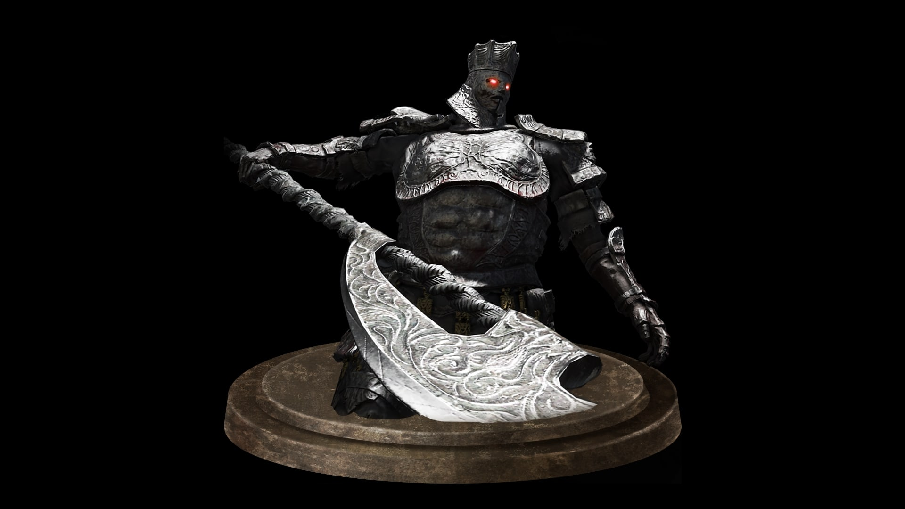
- SCHWÄCHEN
⚡️(BLITZ)❄️(EIS)🩸(BLUTUNG)
- RESISTENZ
- IMMUNITÄT
-
Habt ihr über den Verzehrten König triumphiert steht man vor einer scheinbaren Sackgasse. Das Wörtchen Schein ist hier entscheidend, da ihr die Wand hinter der Truhe zerschlagen könnt und in das geheime Gebiet Ungepflegte Gräber kommt. Das ist exakt das
gleiche Gebiet wie Totenacker der Asche nur mit anderen Gegnern und Items. Lauft dem selben Weg wie damals zum ersten Boss und ihr trefft auf einen alten Bekannten wieder. Meister Gundyr ist wieder da und er will Rache - so zumindest
der erste Gedanke beim Betreten des Bosskampfes. Dieses Mal verwandelt er sich nicht, sondern ist durchgehend so agressiv und so schnell in seinen Bewegungen, dass ihr kaum ein Zeitfenster findet, in dem ihr auch nur einen Treffer
landen könnt. Mit dem Gifteffekt könnt ihr euch den Kampf etwas vereinfachen, müsst aber trotzdem noch ein paar ordentliche Treffer landen. Solange ihr noch genügend Estus-Flakons in der Tasche habt nehmt ruhig den ein oder anderen
Treffer in Kauf, falls ihr die Chance auf etwas Schaden seht.
Drachentöter Rüstung
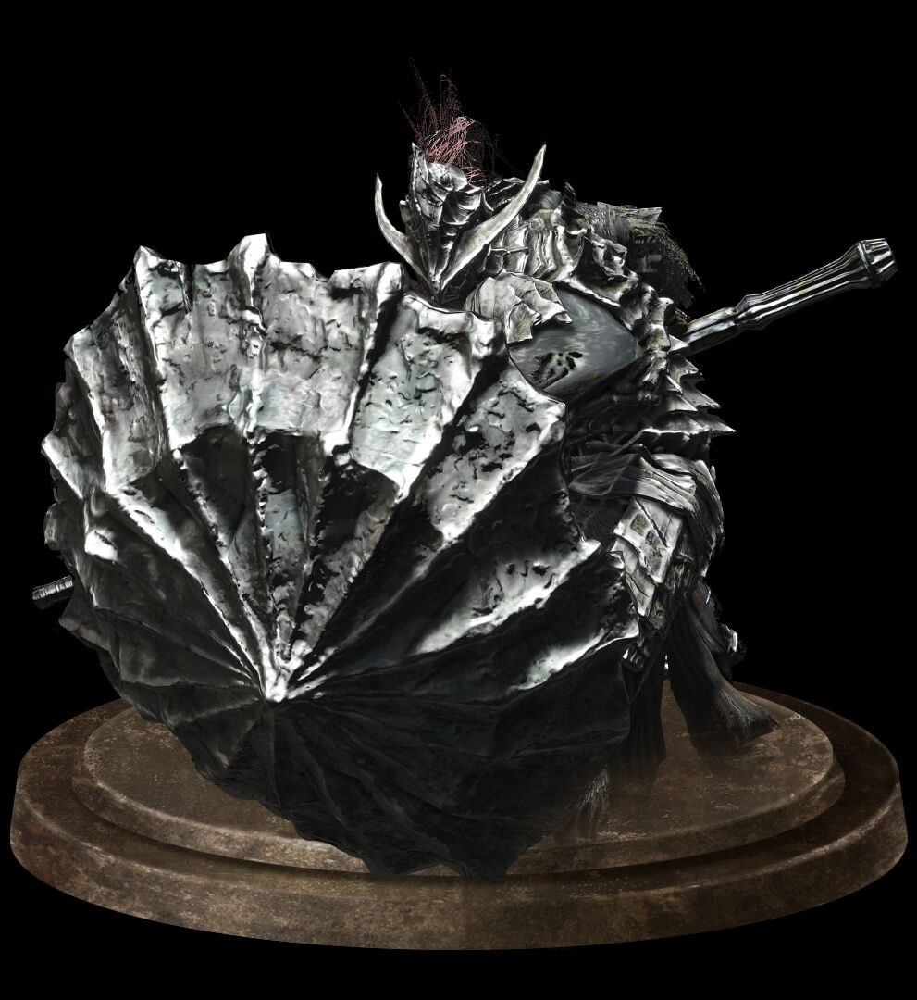
- SCHWÄCHEN
- RESISTENZ
- IMMUNITÄT
-
Bevor ihr zu dem letzten Aschefürsten kommt versperrt euch die Drachentöter-Rüstung den Weg. Wenn ihr euch durch die Burg Lothric durchgekämpft habt und im oberen teil der Festung seid, dann haltet euch links und ihr stoßt auf eine Brücke, die von einem
Nebeltor verschlossen ist. Dahinter befindet sich die Drachentöter-Rüstung. Der Boss trägt eine stabile Rüstung und hat sowohl eine gigantische Axt und seiner rechten Hand und einen ebenso großen Schild in seiner linken Hand. Vor
der Axt, die euch zusätzlich Blitzschaden zufügt, könnt ihr problemlos ausweichen. Der Schild ist es, vor dem ihr euch fürchten müsst. Außerdem setzt der Boss ab und zu eine Explosion frei, bei der ihr euch möglichst schnell von
ihm entfernen solltet. gegen Ende des Kampfes erschwert euch eines dieser fliegenden Gestalten, die ihr zuvor schon am Himmel sehen konntet, den Kampf.
Zwillingsprinzen
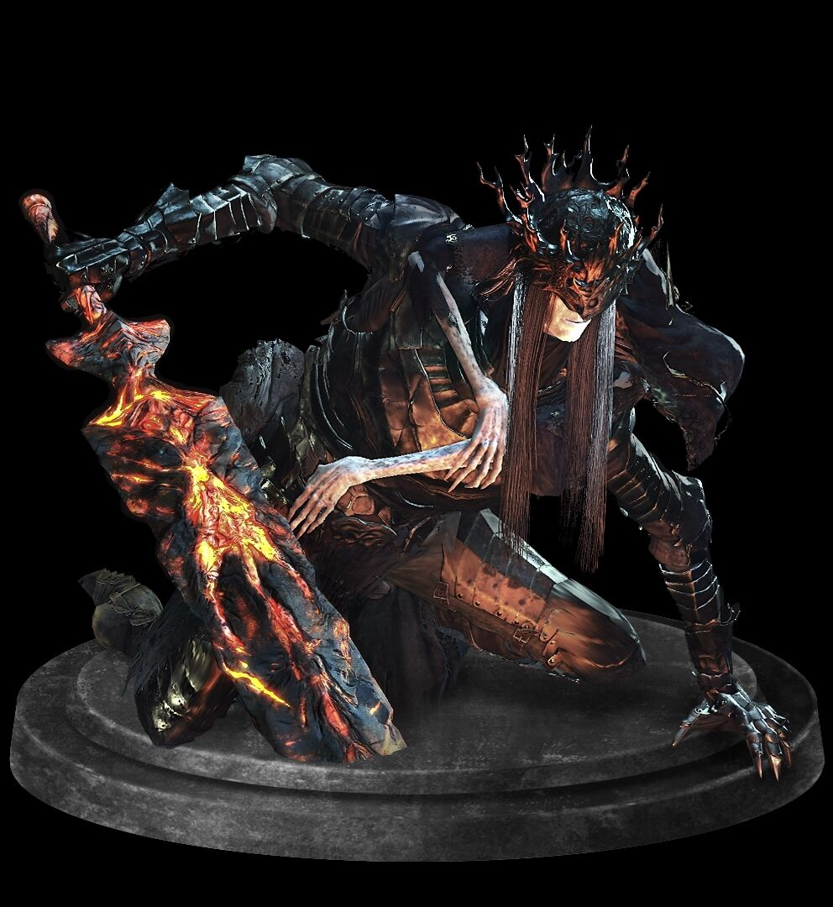
- SCHWÄCHEN
⚡️(BLITZ)🧙♂️🪄(MAGIE)❄️(EIS)
- RESISTENZ
- IMMUNITÄT
-
Wenn ihr das große Archiv verlasst, kommt ihr in einen Innenhof auf dem Dach. Hier erwarten euch 3 knifflige Gegner, doch nachdem ihr diese besiegt habt gelangt ihr zu der Brücke, die zum Schloss Lothric führt. Hier trefft ihr auf die beiden Prinzen Lorian
und Lothric. Zunächst gilt es Lorian zu besiegen. Rollt dabei immer fleißig herum und zwar in dem Moment, wenn er euch gerade schlagen möchte. Passt dabei jedoch auf seine Attacke auf, bei der er sein Schwert auflädt und einmal
auf den Boden schmettert. Hier wird nämlich eine Energiewelle ausgelöst, die euch den Großteil eures Lebens raubt. Und vergesst nicht, dass Lorian sich teleportieren kann. Nachdem ihr ihn letztendlich besiegt habt schreitet sein
Bruder Lothric ein und belebt diesen wieder. Doch damit nicht genug. Huckepack mit Lothric auf den Schultern wird Lorian noch aggressiver, schneller und hat nun auch noch schmerzhaftere Attacken drauf. Lothric hingegen beschießt
euch zeitgleich mit etlichen Zaubern. Versucht hinter das Duo zu gelangen und beiden gleichzeitig Schaden zuzufügen. Denn sobald ihr Lorian tötet belebt sein Bruder ihn wieder. Ihr müsst sie also beide zeitnah erwischen.
Alter Lindwurm (optional)
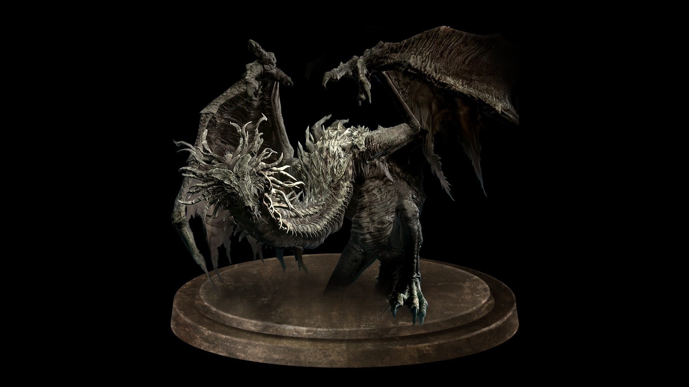
- SCHWÄCHEN
- RESISTENZ
- IMMUNITÄT
-
Wenn ihr bei den Drachenstatuen im Gebiet Kerker von Irithyll die Drachengeste macht gelangt ihr zum Erzdrachengipfel - einem weiteren optionalen Gebiet. Folgt ihr dem Weg und betretet das erste Mal die Drachen-Festung, so lernt ihr den alten Lindwurm
kennen. Der alte Lindwurm ist ein weißer Drache, den ihr nicht wirklich bekämpfen müsst. Vielmehr lauft ihr vor ihm davon, um auf eine Position über ihm zu gelangen und lasst euch dann mit einer geballten Sturzattacke auf diesen
fallen. Und schon habt ihr diesen Endboss zerlegt.
König des Sturms und Namenloser König

- SCHWÄCHEN
- RESISTENZ
⚡️(BLITZ)❄️(EIS)🩸(BLUTUNG)
- IMMUNITÄT
-
Natürlich ist der alte Lindwurm nicht der einzige Boss des Erzdrachengipfels - das wäre ja viel zu leicht gewesen. Habt ihr die komplette Drachen-Festung abgegrast, so findet ihr einen Hebel. Zeiht an diesem, um den somit härtesten Bosskampf des Spiels
einzuleiten. Das Umlegen sorgt für das Glockenläuten, welches wiederum für einen Sturm sorgt. Vor euch hat sich nun eine Brücke aus Nebel gebildet und ihr könnt den Bosskampf gegen den König des Sturms und den Namenlosen König
angehen. Der König des Sturms ist ein Drache, auf dem der Namenlose König sitzt. In der ersten Phase greifen euch beide abwechselnd an, weshalb es hier schon schwer ist überhaupt ein paar Treffer zu landen. Am besten greift ihr
den Vogel an, wenn er sein Kopf senkt und Feuer speit. Schafft ihr es dann mal den Drachen zu vernichten, so dürft ihr euch auf eine hohe Dosierung an mächtigen Angriffen gefasst machen. Der Namenlose König setzt auf Blitzattacken,
also rüstet euch dementsprechend aus. Außerdem werdet ihr mit Nebelwänden beschossen, die ihr besser blocken solltet anstatt auszuweichen. Wartet seine endlos wirkenden Kombos ab und traut euch dann einen vielleicht auch zwei Schläge
auszuteilen, bevor ihr wieder in den Passiv-Modus wechselt.
Seele der Asche
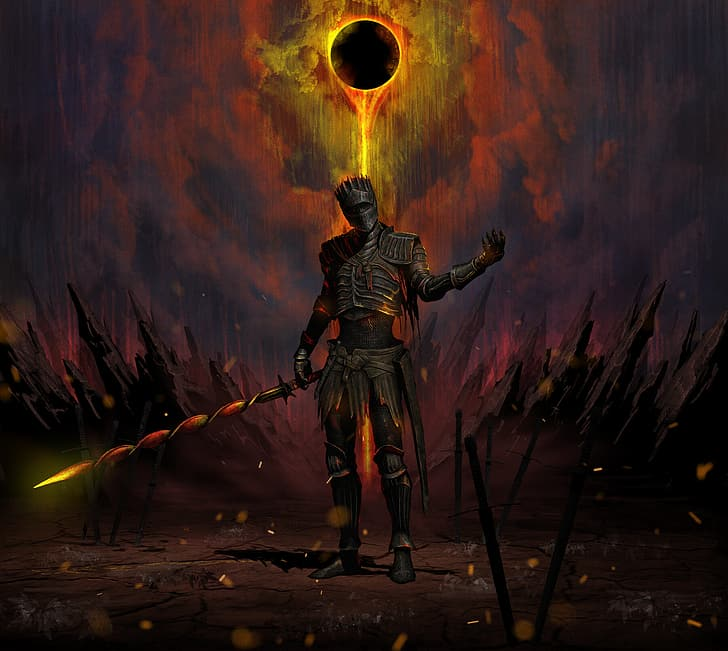
- SCHWÄCHEN
- RESISTENZ
- IMMUNITÄT
-
Das ist der Endboss des gesamten Spiels. Ihr gelangt in das Gebiet, wenn ihr nach dem Kampf gegen die Zwillingsprinzen die Asche Lothrics auf den Thron beim Feuerbrand-Schrein platziert und dann mit der Feuerhüterin redet. Der Boss ist wahrlich schwer,
aber mit dauerhaftem Ausweichen ist zumindest die erste Phase ohne allzu große Lebensverluste schaffbar. Wenn sich die Seele der Asche hinkniet, dann knüppelt auf ihn ein, da er in diesem Moment nichts ausrichten kann und ihr damit
seinen Prozess der Heilung stoppt. Nachdem ihr ihn anscheinend besiegt habt, lädt er seine Energieleiste nochmal bis zum Anschlag auf und es geht in die zweite Runde. In dieser zweiten Phase könnt ihr die Taktik normalerweise beibehalten,
doch müsst euch etwas zurückhalten mit dem Angreifen. Achtet vor allem auf seine geschleuderten Blitze, die euch schnell mal den Großteil eures Energiebalkens rauben. Mit ein wenig Ehrgeiz und Durchhaltevermögen schafft ihr diesen
Endboss dann auch.